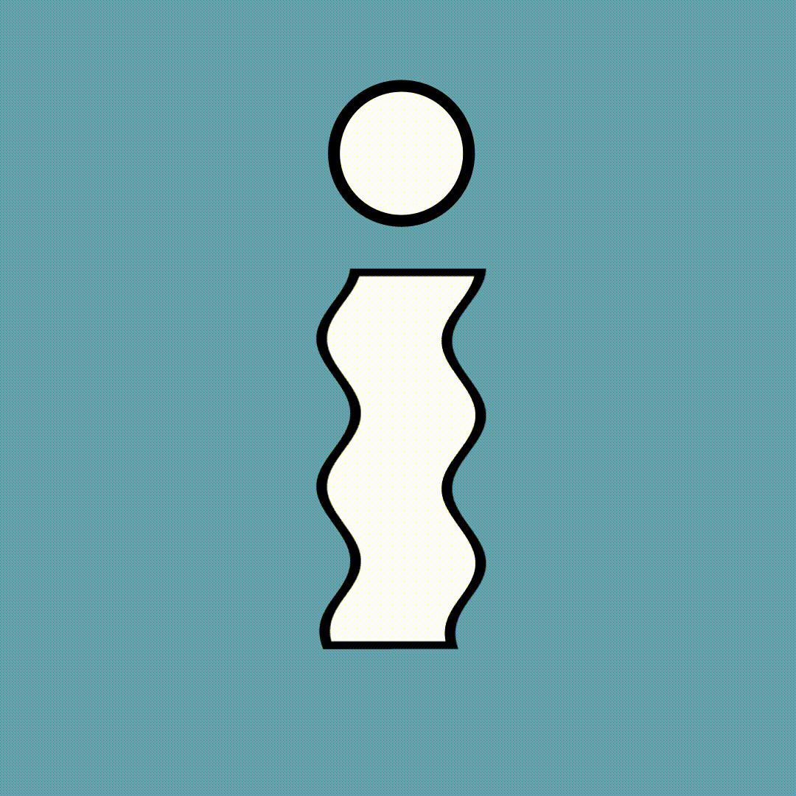
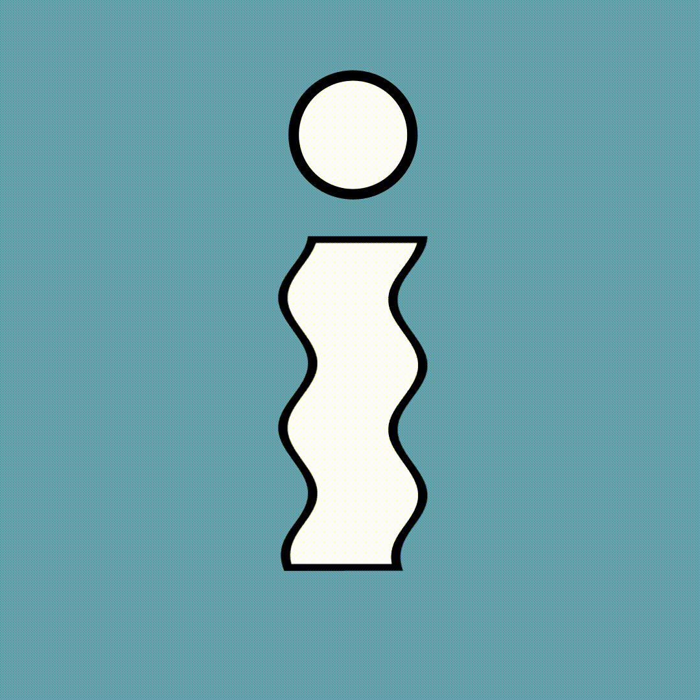

TYPOGRAPHY
A selection of Lettering Art and typographic experiments that are a result of pushing my own technical boundaries and skill.
A selection of Lettering Art and typographic experiments that are a result of pushing my own technical boundaries and skill.
